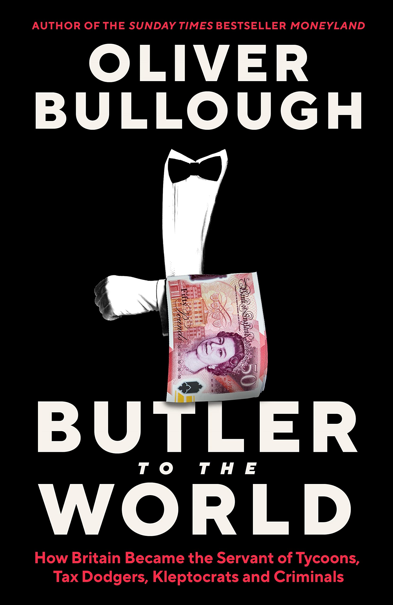

Rating: 4/5
Bullough is, if nothing else, a great storyteller. His story of the British financial underworld focuses less on its sheer magnitude (4000 GBP in fraudulent money passes through the UK for each person in it) and more on its hidden quirks (private prosecutions are Butler Britain’s correction mechanism), but it’s very entertaining. It paints a picture for you that, if accurate, is telling.
Scottish Limited Partnerships, shell companies in the British Virgin Islands, Gibraltar’s gaming industry (soon to be crypto), London’s sheltering of Russian-backed Ukrainian energy tycoons, and the use of private prosecutions as Butler Britain’s corrective mechanism all have their time in the limelight. For each, the same story: lax British policies let criminals hide in plain sight.
The author’s contempt for the ‘men of the City’ pierces through, but this does not detract immensely from his analysis. Rather, it opens the door for funny quips targeted at the British pseudo-aristocracy. He opens with a mention of his brief stint at a butlering school and switfly being kicked out. This landed, while others fall somewhat flat (a mention of his poor interview with Parliament & his uncombed hair and not-fitted suit).
(Apparently those who ran the Bank of England in the 1960s didn’t even attend universities! They were just Eton boys, ‘public schoolboys’, who controlled the levers of financial power and paved the way for lax restrictions on financial practice on this side of the Atlantic.)
This book is neither meant to give policy prescriptions nor shower the reader with facts and figures of British financial crime. It’s a good story, a well-researched one at that.